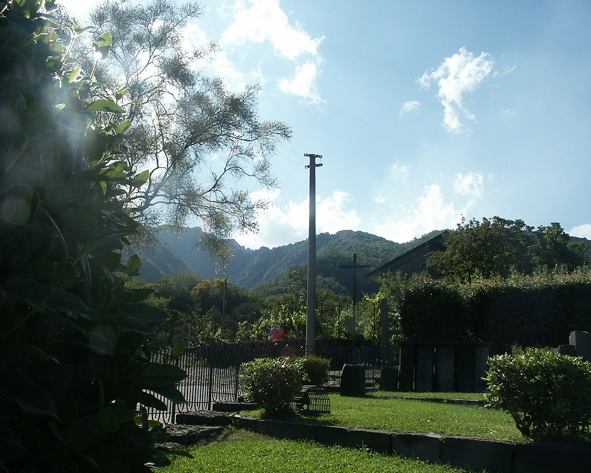

Johnnie and Oberta Baker's Photo Album Previous Gallery Next
|

A park- nothing exciting except we were told Mt. Etna was one of the bumps in the background. Unfortunately, we didn't get much closer. However, that was probably a good idea as this volcano is VRY active and has had repeated major eruptions and lava flows within the past year. |